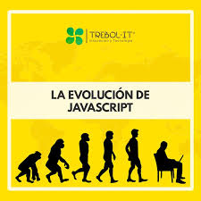
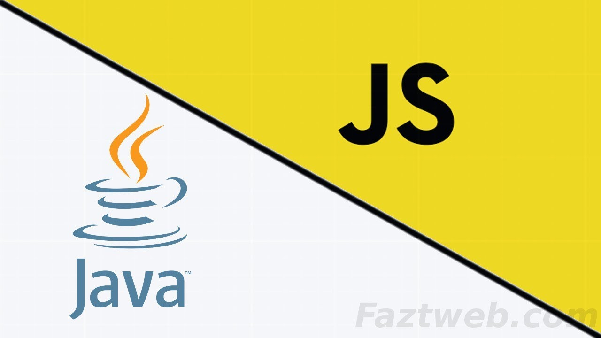
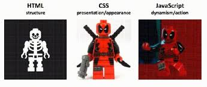

1. Introducción
¿Qué es y para qué se usa?
Es un lenguaje de programación que hace que las páginas web sean dinámicas e interactivas. Se utiliza para validar formularios, crear animaciones, responder a las acciones del usuario, y actualizar contenido sin recargar la página (gracias a AJAX y Fetch).

Historia y contexto
JavaScript fue creado en 1995 por Brendan Eich para dar interactividad a las páginas web. Hoy, además de complementar a HTML y CSS, se usa para desarrollar aplicaciones completas en el navegador y en el servidor con Node.js.
Diferencia con Java
Aunque tienen nombres parecidos, son lenguajes distintos. Java es compilado y robusto, usado para aplicaciones a gran escala. JavaScript es interpretado y enfocado en la web.
Complemento con HTML y CSS
HTML define la estructura, CSS le da estilo, y JavaScript agrega la lógica e interactividad. Los tres son esenciales para crear la web moderna.
2. Fundamentos del Lenguaje
Sintaxis: Las instrucciones terminan con ;. Los comentarios se escriben con // para una línea y /* ... */ para varias.
Variables: Se usan var, let y const. Se recomienda usar let para variables que cambian y const para las que no.
Tipos de datos: Los tipos primitivos incluyen String, Number, Boolean, Null, Undefined, Symbol y BigInt.
Estructuras de datos: Los **arrays** son listas ordenadas, y los **objetos** guardan pares de clave-valor.
Operadores: Permiten realizar operaciones como aritmética (+, -, *, /), lógica (&&, ||) y comparación (==, ===).
3. Control de Flujo
Condicionales: if/else se usan para tomar decisiones, y switch para manejar múltiples opciones.
Bucles: for y while permiten repetir bloques de código. break y continue se usan para controlar su ejecución.
4. Funciones
Las funciones son bloques de código reutilizables. Pueden recibir parámetros y devolver un resultado con return.
Funciones flecha: Tienen una sintaxis más corta, como (a, b) => a + b, y son muy útiles en callbacks.
Alcance (Scope): Define la accesibilidad de una variable. Puede ser global, de función o de bloque.
5. Objetos y colecciones
Objetos: Son estructuras que agrupan propiedades (valores) y métodos (funciones). Se accede a sus miembros con la sintaxis de punto: persona.nombre.
Métodos de arrays: Los arrays tienen métodos integrados como push() (añadir al final), pop() (eliminar el último) y map() (transformar elementos).
6. Otros temas
DOM: El Document Object Model (DOM) representa la página como un árbol que JavaScript puede modificar en tiempo real.
Eventos: Acciones como clics o entradas de texto que permiten la interacción del usuario.
Herramientas: alert muestra un mensaje, prompt pide un dato y console.log imprime en la consola para depurar errores.